Jev 入門教室
言葉を返さない AI で、判定を手元で動かしてみよう
表紙
言葉を返さない AI で、判定を手元で動かしてみよう
はじめに 1/6
朝、問い合わせの一覧を開く。欲しいのは「急ぎか」「どの部署に回すか」だけなのに、AI に頼むと丁寧な前置きから始まる長い文が返ってくる。はい／いいえや、どれかひとつだけ聞きたいのに、また文章を読まされる。
僕は 30 代の IT 企業に勤める、ごく普通の会社員です。ChatGPT が出てから、仕事のやり方はかなり変わりました。下書きを書かせる。仕様を整理させる。コードの直し方を聞く。どれも、いまや朝のルーチンの一部です。
そのあいだ、ずっと同じ感覚がありました。AI に何かを頼むと、必ず文章が返ってくる。丁寧な前置きがあって、理由があって、次の一手の提案までついてくる。助かる一方で、本当は短い答えだけ欲しい場面でも、長い文を読まされることが多かったのです。
返信文の下書きは、あとで人か生成 AI が書けばいい。ところが、その一点だけを聞くと、生成 AI はまた文章で答えてしまう。JSON を崩したり、候補に無いラベルを作ったり、確信の度合いが読めなかったりする。エージェントを組んでみたときも、いちばん手間がかかったのは「次の一手を選ぶ」ところでした。言葉のあいだに挟まって、速さも安定さも落ちる。
そんなときに出会ったのが、TypeSafe AI の Jev（ジェブ）です。
はじめに 2/6 · 図1
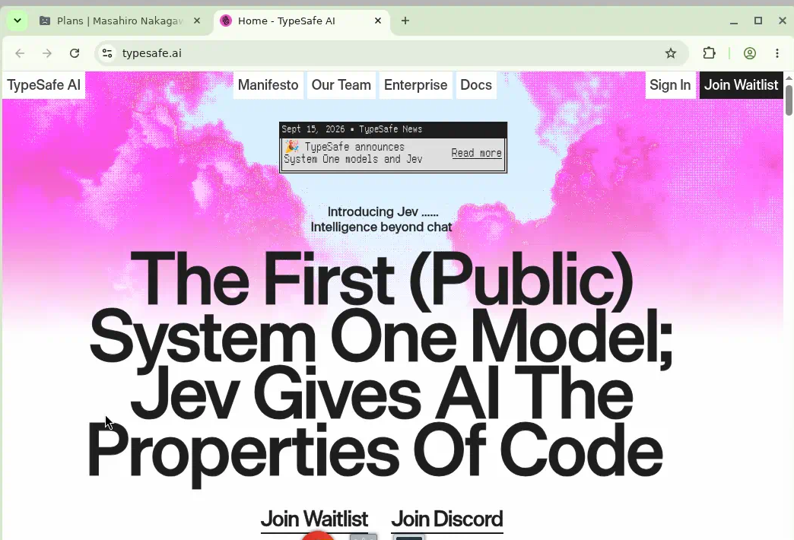
図1: typesafe.ai のトップ。Join Waitlist から申し込む
Jev は、言葉を返しません。文章も、要約も、「なぜそう判断したか」も出ません。やることは一点です。質問した内容に対して、判断をするだけ。
問い合わせを渡して「どの部署が見るべきか」と聞くと、technical という答えと、0.85 といった数字が返ってきます。「技術チームにお回しください」という一文は付きません。「この下書きは人が確認してから出すべきか」と聞けば、0.91 のような数字が返ってきます。はいでもいいえでもなく、数字です。
最初は正直、パッとしませんでした。文章を返さない AI に、何の使い道があるのか。分類くらい、いまの生成 AI にやらせればいいじゃないか。そう思うのが自然だと思います。僕もそうでした。
はじめに 3/6
ところが、「言葉を返さない」という割り切りが、意外なほど多くのものを連れてきます。速くなります。安くなります。返ってくる形が壊れません。そして、答えと一緒に「どれくらい確信しているか」の数字が付くので、低いときは人に回すという分岐が、プログラムとして書けるようになります。
要するに、僕が仕事のなかで何度もやっている「一瞬の見極め」を、言葉で書いて、数字で受け取る部品です。正規表現やキーワード一致では書けなかった条件——「これは依頼か、ただの共有か」「この回答は規程と食い違っていないか」——を、日本語の一文で書ける。返ってくるのは数字なので、その先はいつもの if 文です。
この電子書籍は、そんな Jev を、基礎から手元で動かしていくための本です。難しい理屈は扱いません。ブラウザで 1 回動かし、同じことを API で呼んで JSON を読み、自分の仕事に近い小さな作り物を数回動かす。手を動かしながら、「これは何を返すモデルなのか」を体に入れていく構成です。
用語
System One Model = 速い直感の側だけを担当する AI モデルの呼び方。Jev はその第1号で、文章を書かず、判断だけを返します。
はじめに 4/6
次のような方を対象にしています。
Jev の嬉しさは、「いま AI にやらせている仕事の、どこが遅くて高いか」を知っている人ほど、はっきり見えます。逆に、本書から生成 AI そのものを学ぼうとすると、方向性が違います。Jev は文章を書かないモデルで、いわゆる生成 AI とは役割が別です。プロンプトの書き方やチャットの使いこなしは扱いません。
本書では実際に API を叩きます。とはいえ、書くのは curl というコマンドだけです。アプリケーションを組み立てるわけではありません。ターミナルにコマンドを打ち込んで、返ってきた JSON を読む。それだけです。
はじめに 5/6
扱うものは、次の6つです。
扱わないものは、次の3つです。
はじめに 6/6 · 注記はページ下部
第1章から順に読むのが速いです。すでに招待が届いている人は、第3章の概要を飛ばして構いません。第2章は、手を動かさずに読む章です。自分の仕事のどこに Jev が入るかを探す章なので、先に手を動かしたい人は第3章へ進んでも大丈夫です。第4章まで進むと、Jev が何を返すモデルなのかが画面で分かります。第6章以降はそれぞれ独立した作り物なので、自分の仕事に近いものから拾い読みできます。
長いコードの全文は、紙面には載せすぎません。本質の数行と省略コメントを置き、コピー用の全文は次の Pages に置いています。各サンプルには ch05-01 のような ID が付いているので、章番号から探してください。
https://smilior.github.io/jev-book-samples/
※本書籍は 2026 年 9 月執筆時点の情報に基づきます。Jev は早期アクセスで、画面・料金・招待の条件は変わります。あらかじめご了承ください。
目次 · 本文ノンブルと同期済み
第1章 · 章扉
1
できないことと、質問の型から押さえる
第1章 · 1 概要
僕が最初に Jev の説明を読んだとき、「文章を返さない AI」という一文だけが頭に残りました。仕様を眺めても「で、何が嬉しいのか」で止まっていたので、ここでは先にできないことと、質問の型を押さえます。
Jev は、TypeSafe AI が 2026 年 9 月 15 日に発表した AI モデルです。同社が「System One Model」と呼ぶ種類の第 1 号で、文章を書きません。
普通の生成 AI は、質問を受けると文章を 1 文字ずつ組み立てて返します。Jev はそれをやめました。代わりに、こちらが用意した選択肢の中から答えを選び、その確からしさを数字で返します。返ってくるのは、ラベルと数字だけです。
たとえば「この問い合わせはどの部署が見るべきか」を聞くと、technical という選択肢と、0.85 という確率が返ります。「技術チームに回してください」という文は付きません。
名前の由来は 2 つあります。
第1章 · 2 日本語と英語
公式ドキュメントは、英語が主たる学習言語で、いま精度がいちばん高い、と書いています。日本語や中国語でも動きますが、精度は同等ではない、という注記があります。
本書の例は日本語です。日本語で意味のある判定は返ってきます。ただし、数字が現場の読みとずれるときは、同じ質問を英語でも 1 回試してください。
そのとき、材料（state）と質問（instructions / criteria）は、どちらかの言語に揃えます。混ぜると、どちらの読みで判定されたのか分からなくなります。実測の比較は付録C に置いています。
注意
材料と質問で言語を混ぜない。日本語で聞くなら材料も日本語、英語で聞くなら材料も英語にそろえます。
第1章 · 3 できないこと（前半）
先に、できないことを並べます。ここを取り違えると、あとの章が全部ずれます。
文章を書きません。返事の文、要約、翻訳、コード。どれも出ません。文章が要る場面は、いままで通り生成 AI（LLM）に任せます。
理由を説明しません。「なぜ technical なのか」は返ってきません。返るのは technical と 0.85 だけです。理由が欲しいなら、LLM に別途聞きます。
渡した候補から選択する仕組みです。こちらが billing / technical / sales の 3 つを渡したら、必ずこの 3 つのどれかに確率を振ります。4 つ目を勝手に作ることはありません。「この問い合わせは、そもそも問い合わせではない」と気づいて教えてくれる、ということも起きません。
この仕組みは、長所でもあり、落とし穴でもあります。長所は、返ってくる答えが必ずこちらの想定内に収まることです。プログラムから見れば、billing か technical か sales のどれかしか来ないと分かっているので、安心して分岐が書けます。
第1章 · 3 できないこと（後半）
落とし穴はその裏側です。逃げ道のない候補を指定すると、正解がなくてもどれかを選ぶ仕組みになります。「先週の展示会、助かりました」という感謝の一文を投げても、Jev は「どれでもありません」とは答えません。3 つのうち、いちばんマシなものを選びます。だから、該当なしを許したい判定では、「どれにも当てはまらない」という候補を自分で足しておきます。逃げ道は、こちらが用意するものです（第6章で扱います）。
判断するだけです。メールを送る、フォルダへ移す、家電を点ける。どれも Jev はしません。その判断を受けて仕組みを動かすのは、呼び出し側のコードだったり、画面を見ている人だったりします。
数えるのと、日付の前後を比べるのが苦手です。「この文に項目がいくつあるか」「A の日付は B より前か」といった計算は、コードでやります。
画面そのものは見られません。スライドの文字がはみ出しているか、といった見た目の判定は、文字の位置や大きさを機械的に取り出してから渡す必要があります。
質問を字義どおりに読みます。意図は汲んでくれません。聞きたいことは、聞きたいとおりに書きます。
用語
「ハルシネーションしない」は、返ってくる形が必ず正しい、という意味です。選択肢以外の文字列や壊れた JSON は仕組み上ありません。中身の判断が正しいことの保証ではなく、高い確信で外すこともあります。
第1章 · 4 質問の型
Jev への質問は、3 種類しかありません。どれを使うかは、欲しい答えの形で決まります。
| 型 | 何を聞くか | 返ってくるもの |
|---|---|---|
| choice | 用意した候補から、どれか 1 つ | 選ばれた候補 + 全候補の確率 + confidence |
| score | 順番のある段階の、どこか | 0 始まりの連続した数値 + 各段階の確率 + confidence |
| noul | はい / いいえ | 「はい」の確率（0 〜 1） |
choice は、順番のないものを選ぶときに使います。担当部署、文書の種類、次に押すボタン。候補はこちらが criteria に書きます。
第1章 · 5 型の使い分け
score は、低い → 高い、のように順番があるものに使います。不満度、危険度、丁寧さ。段階の説明を配列で渡すと、0 番から順に番号が振られます。返ってくる数値は整数とは限りません。1.62 なら「1 番と 2 番のあいだで、2 番寄り」という意味です。
noul は、はい・いいえで答えられる問いに使います。返ってくるのは「はい」の確率です。1 に近いほど「はい」、0 に近いほど「いいえ」、0.5 付近は「どちらとも言えない」。noul は API 上の型名で、一般的な用語ではありません。
本書では、第4章と第6章で noul と choice を動かし、score は第7章で初めて画面に出します。3 つを 1 回の呼び出しに混ぜることもできます。
confidence は、choice と score に付きます。答えの分布がどれだけ尖っているかを表す数字で、1 に近いほど「この 1 つでいい」という意味です。noul には付きません。noul の迷いは、返ってきた数値そのもの（0.5 付近かどうか）で見ます。
この confidence が、Jev をプログラムに組み込めるようにしている部分です。「分からない」と自分で言えるので、低いときは人に回す、という分岐が書けます。
第1章 · 6 LLM との違い
なりません。役割が違います。
いまの生成 AI（LLM）は、状況を解釈して、次に何をするかを自分で決め、文章で返します。Jev は、こちらが決めた質問に、こちらが決めた形で答えるだけです。処理の進め方を決める責任が、AI 側ではなく、プログラム（または人）の側にあります。
実務では、両方を組み合わせます。よく出てくる分け方は次の 2 つです。
僕は最初、「賢い if 文」だと思って始めました。これまで正規表現では書けなかった条件を、日本語の一文で書ける。返ってくるのは数字なので、その先はいつもの条件分岐です。ただし、判断の軸は自分で言葉にする必要があります。Jev は、何を基準に判断すべきかを考えてくれません。判断を言葉にできない仕事は、Jev には渡せません。ここが、本書でいちばん時間を使う部分です。
第1章 · 7 料金と速さ
Jev の売りは、速さと安さです。ただし、公表されている数字の出どころは分けて読む必要があります。料金の最新は、コンソールの画面で確認してください。本書では金額を固定しません。
速さ。公式ドキュメントは数十〜数百ミリ秒の範囲を出しています。手元から叩いても、おおむね 1 秒未満で返ってきます（付録C の実測）。同じ判定を生成 AI にやらせると数秒かかるので、体感の差は大きいです。「従来の何倍速い」という比較も出回っていますが、自社評価の上限側であることが多いので、そのまま鵜呑みにはしません。自分のキーで 1 回測るのがいちばん確実です。
料金。入力トークンに対して課金され、出力は無料、という形が執筆時点の基本です。出力が無料なのは、返ってくるのが数字だけで、そもそも量を測る意味がないからです。普通の生成 AI では出力のほうが入力より高いので、ここが逆転しているのが特徴です。単価の数字は変わりうるので、画面で確認してください。
第1章 · 8 Usage で確かめる · 図1-1
コンソールの Usage では、使った金額とトークン量がグラフで見えます。まずは短い文で 1 回試して、ここの数字を見るのが確実です。
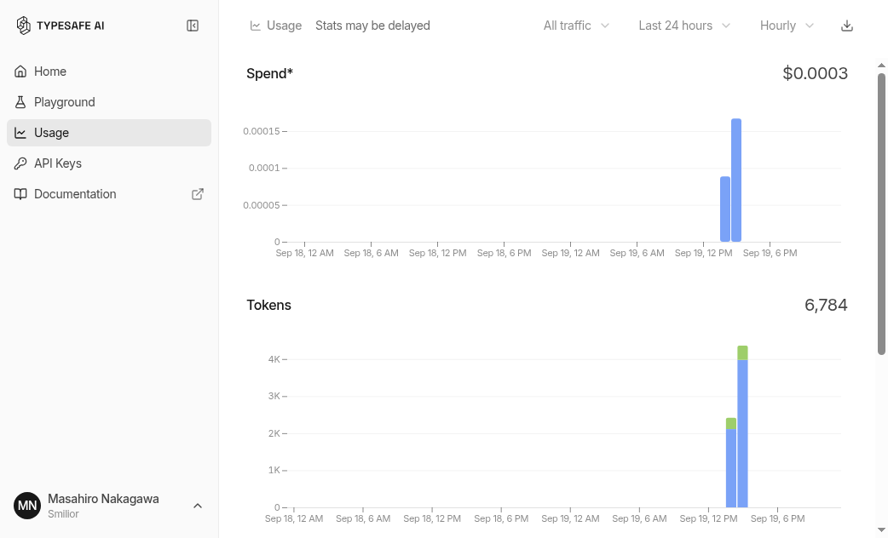
図1-1: Usage。Spend と Tokens の推移。金額は固定せず、自分の画面で確認
短い問い合わせ 1 件に質問を 3 つ載せた実測では、入力数百トークン・出力数十トークンでした。課金対象は入力だけです。同じ内容でも、日本語は英語よりトークンを食います（付録C）。
第1章 · 9 向く仕事
「いくら分のクレジットで何回叩けるか」は決められません。一行の文と、長い資料を貼った場合では、読む量が桁で変わるためです。
入力の長さには上限があります。生成 AI ほど長いものは載せられません。長い資料を丸ごと貼る使い方には向かないので、判定に使う節だけを抜いて渡します。実際に何トークンまで載るかは、公式ドキュメントで確認してください。これは第9章で扱う「材料が薄い／厚い」の話につながります。
Jev に向くのは、同じ型の判断を何度も繰り返す仕事です。判断の回数が多いほど、速さと安さが効いてきます。逆に、判断が 1 日に数回しかない仕事なら、いま使っている生成 AI のままで困りません。本書を読んで「自分の仕事には要らない」と分かるのも、目的のうちです。
第1章 · キーワード早見
この章で出てきた言葉です。厳密な定義より「たとえ」で覚えてください。あとから見返す用の早見表です。
| ことば | たとえ |
|---|---|
| System One Model | 速い直感の側だけを担当する AI。Jev はその第1号 |
| choice | 用意した候補から 1 つ選ばせる質問 |
| score | 段階のどこかを数値で答えさせる質問 |
| noul | はい・いいえを確率で答えさせる質問 |
| confidence | 「この 1 つでいい」と言い切れる度合い |
| state / criteria | 判定の材料 / 判定の質問と候補 |
第1章 · まとめ
ポイント
ここまでは、Jev が何を返すかの話でした。次の章は手を動かさずに読む章です。自分の仕事のどこに Jev が入るかを、場面と図で探していきましょう。
第2章 · 章扉
2
手を動かさずに、入る場所を5つ見る
第2章 · 1 概要
第1章で、Jev が何を返すかは分かりました。ただ、それだけでは自分の仕事のどこに入るのかが見えません。数字しか返ってこないモデルは、説明を読んでも使い道が浮かびにくいからです。
この章では、Jev が入る場所を5つ挙げます。手は動かしません。図を見て、自分の仕事に近いものを探してください。
| 場面 | Jev に聞くこと |
|---|---|
| 1 メールを、分類ごとに仕分ける | この 1 通はどの部署が見るか |
| 2 AI に書かせた回答を、送る前にチェックする | 社内にない数字が混ざっていないか |
| 3 質問の重さで、使う AI を変える | 決まった答えで足りるか |
| 4 5,000 件のレビューから、返信が要る 100 件を拾う | この 1 件は返信が要るか |
| 5 送信ボタンを押す前に、FAQ を出す | この質問は FAQ で足りるか |
5つとも、Jev がやるのは判断だけです。仕分ける、止める、書き直させる、画面を出す。この実行の部分は、全部あなたが書いたコードか、あなた自身がやります。
第2章 · 2 仕分ける · 図2-1
会社の共通メールに届いたお客さんのメールを、経理・技術・営業など各担当に振り分ける作業の例です。サポート窓口の共用アドレスに、週明けの朝で 50 通たまっています。「請求書が二重に届いています」は経理。「管理画面にログインできません」は技術。「来期の見積もりがほしい」は営業。ところが件名は「お問い合わせ」「ご相談」ばかりで、半分は開いて 3 行読まないと分かりません。
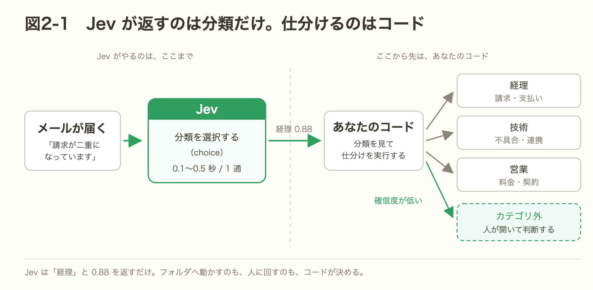
図2-1: 点線の左までが Jev。右はあなたのコードの仕事
第2章 · 2 仕分ける（続き）
流れは 4 つです。メールが届く → Jev が分類のカテゴリを 1 つ選ぶ → その分類を見てコードが仕分けを実行する → 判断できなかったものはカテゴリ外に置く。
渡すのは choice です。カテゴリには名前だけでなく、説明を必ず書きます。「経理」とだけ書くより、「請求・支払い・二重請求の話」まで書いたほうが当たります。返ってくるのは、選ばれたカテゴリ名と、0 から 1 までの確信度です。
Jev がやるのは、ここまでです。メールをフォルダへ動かすのも、担当者のキューに入れるのも、Jev はしません。確信度が低いときは、どのカテゴリにも入れません。カテゴリ外として残し、人が開いて判断します。この「入れない」を決めるのも、コードの側です。しきい値をいくつにするかは、あなたが決めます。
いちばん大事なのは、部署のカテゴリではなく、カテゴリ外です。50 通を全部人が確認するのは無理でも、カテゴリ外に落ちた 5 通なら読めます。全部を自動にするのではなく、決めきれなかったものだけ人に回す。この形は、残り 4 つの場面にも全部出てきます。
第2章 · 3 止める · 図2-2
AI が書いた、お客さんへの返信文を、送る前に「このまま出してよいか」チェックする作業の例です。問い合わせへの回答を、生成 AI に下書きさせています。9 割はそのまま送れる出来です。困るのは残りの 1 割です。「昨年度の導入実績は 200 社です」のような、社内のどこにも書いていない数字が、ときどき紛れ込みます。
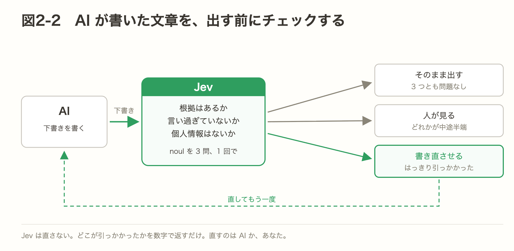
図2-2: noul を 3 つ並べ、結果で送る／保留／書き直しに分ける
第2章 · 3 止める（続き）
下書きができたら、送る前に Jev へ渡します。聞くのは noul を 3 つ。はいかいいえで答えられる形にします。
観点は必ず分けます。「この文章は危険か」と 1 問にまとめると、どれを直せばいいか分かりません。
返ってきた 3 つの数字を見て、コードが行き先を決めます。全部低ければ、そのまま送る。どれかが中途半端なら、保留にして人が読む。はっきり高ければ、AI に書き直させる。信号機と同じ 3 色です。
第2章 · 4 選ぶ · 図2-3
お客さんからチャットで来た質問を見て、定型回答・軽い AI・重い AI のどれに回すか決める作業の例です。チャットボットに来る質問の 6 割は「営業時間は何時までですか」です。答えは決まっています。残りの 4 割に、規約を読んで判断が要るものが混ざります。全部を同じ賢いモデルに投げていると、営業時間を聞いただけの人も待たされ、そのぶんの料金を毎回払っています。
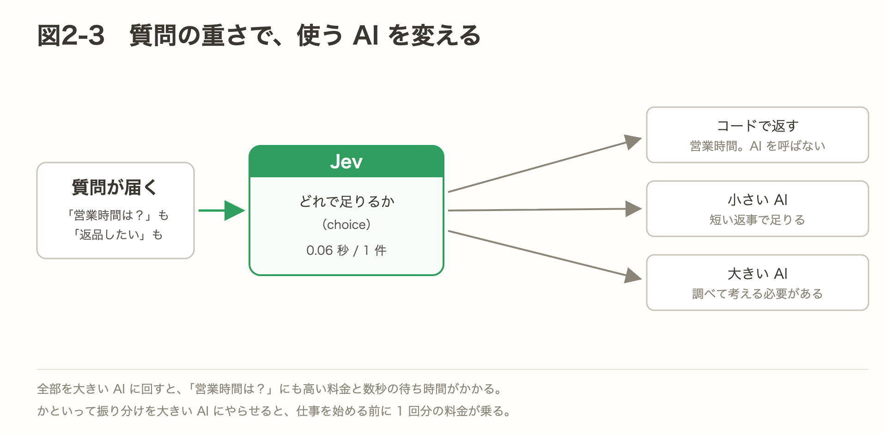
図2-3: 振り分けだけを Jev にやらせ、仕事は選ばれた先へ回す
質問が来たら、まず Jev に choice で「定型／軽い／重い」のどれで足りるかを聞きます。選ばれた先にだけ、実際の仕事を回します。振り分けそのものを賢いモデルにやらせたら意味がありません。仕事を始める前に、1 回分の料金と待ち時間が乗ってしまうからです。
第2章 · 5 絞る · 図2-4
通販サイトにたまった商品レビュー（例: 5,000 件）から、返信や対応が必要なものだけを抜き出す作業の例です。大半は「届きました。満足です」で終わります。ただこの中に、放置するとまずいものが 100 件ほど混ざっています。5,000 件を 1 件ずつ生成 AI に読ませると、時間も料金もかかりすぎます。
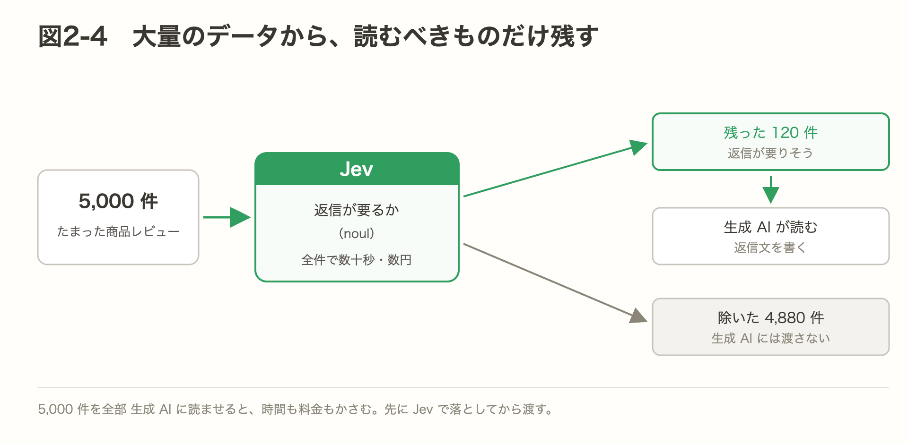
図2-4: 5,000 件を先に絞り、残ったものだけ生成 AI へ渡す
まず 5,000 件を全部 Jev に流します。聞くのは noul を 1 つだけ。「このレビューは、こちらから返信や対応をしたほうがよい内容か」。しきい値を超えたものだけ、生成 AI に渡して返信文を書かせます。仕分けは全部をカテゴリに割り当てるのが目的。こちらは、次に渡す数を減らすのが目的です。
第2章 · 6 即答 · 図2-5
お客さんが問い合わせフォームに入力している最中に、FAQ で足りる内容なら送信ボタンを押す前に案内を出す作業の例です。届く質問の 3 割が「パスワードを忘れました」で、FAQ の一番上に書いてあります。いまは送信された後に自動返信で FAQ のリンクを送っていますが、送信した側はもう人の回答を待つ気になっています。
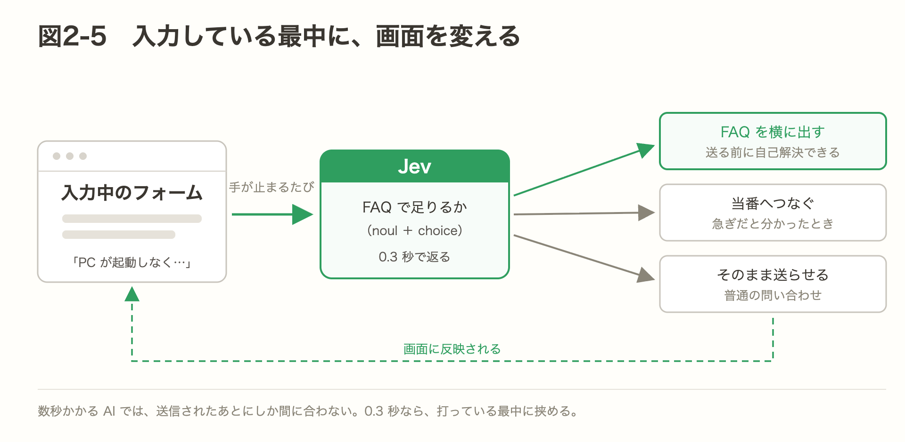
図2-5: 入力中に投げるので、送信ボタンの前に画面を変えられる
ユーザーが入力しているあいだ、手が止まるたびに、そこまでの文章を Jev へ投げます。「FAQ で足りるか」（noul）と「どの窓口か」（choice）。速いので、打っている本人は待たされません。数秒かかる AI では組めません。速さが、できることの範囲そのものを決めています。
この場面を試すのに、フォームを作る必要はありません。第4章の Playground に、過去に届いた問い合わせを 1 文貼って、「この質問は FAQ で足りるか」と聞いてみてください。
第2章 · 7 共通の形
並べてみると、同じ形が見えてきます。5つを別々に書いていたときは、メールの振り分けとレビューの仕分けは別物だと思っていました。表に並べてみて、初めて「入口・型・出口」が同じだと気づきました。
| 入口 | 型 | Jev に聞くこと | 出口 |
|---|---|---|---|
| メール 1 通 | choice | どの部署か | 経理・技術・営業・カテゴリ外 |
| AI が書いた回答の下書き | noul ×3 | 数字・約束・個人情報は大丈夫か | 送る・人が読む・書き直し |
| チャットの質問 1 件 | choice | どれで足りるか | コード・小さい AI・大きい AI |
| レビュー 1 件（全 5,000 件） | noul | 返信が要るか | AI へ渡す・見ない |
| 入力中の文章 | noul ＋ choice | FAQ で足りるか／どの窓口か | FAQ を出す・当番へ・そのまま送信 |
第2章 · 8 型の選び方
型の選び方は単純です。行き先が 3 つ以上あるなら choice。はいかいいえなら noul。低い・中くらい・高い、と順番があるなら score。この章に score が出てこなかったのは、5つの場面がどれも「どれか」か「はいかいいえ」で足りたからです。score を使うのは、緊急度を段階で測りたいときで、第7章で実際に動かします。
まず、出口が数個に決まっています。先に選択肢を書き出せない仕事は、Jev には渡せません。「いい感じにして」は頼めない、と言い換えてもいいです。次に、どれも同じ判断を何度も繰り返します。1 日に 2 回しか起きない判断なら、0.3 秒が 3 秒になっても困りません。効いてくるのは、50 件、500 件、5,000 件と積み上がるところです。そして 5 つとも、確信度が低いものを人に回す道が残してあります。取り消せない操作を、いきなり自動にしていません。
いま生成 AI に頼んでいる仕事を、頭の中で 2 つに割ってみてください。1 つは、文章を書いてほしい部分。もう 1 つは、選んでほしいだけの部分。どっちに振るか、出してよいか、読む価値があるか。ここが Jev の担当です。そして多くの場合、こちらのほうが回数が多く、待たされていて、意外と高くついています。
第2章 · まとめ
ポイント
ここまでは読むだけの章でした。次の章から手を動かします。まずは申し込みとログイン、そして API キーを取るところまでを通します。
第3章 · 章扉
3
申し込みから、キーを控えるまで
第3章 · 1 概要 · 図3-1
触ってみたいのに、まだ自分の画面が無い。Jev は早期アクセスで、招待制です。申し込んで、招待が届いてから使えます。順番は 4 つです。
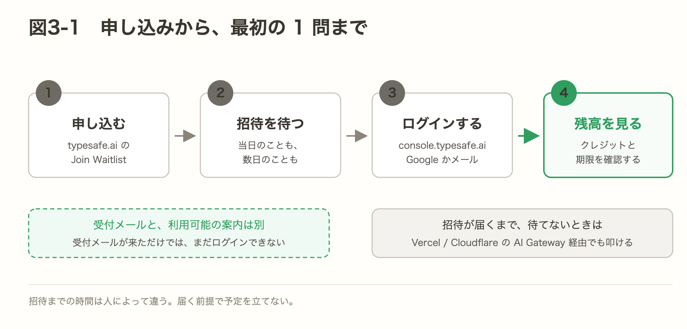
図3-1: 申し込み → 招待 → ログイン → 残高確認の順
第3章 · 2 待機リスト · 図3-2
申し込みから招待までの時間は、人によって違います。申し込んだ当日に届くこともあれば、一晩かかることも、数日待つこともあります。届く前提で予定を立てないでください。
1. 公式サイトを開く
右上の「Join Waitlist」をクリックします。受信できるメールアドレスを入れて送信します。これは「使えるようになったら教えてください」という申し込みで、この時点ではまだ使えません。
https://typesafe.ai/
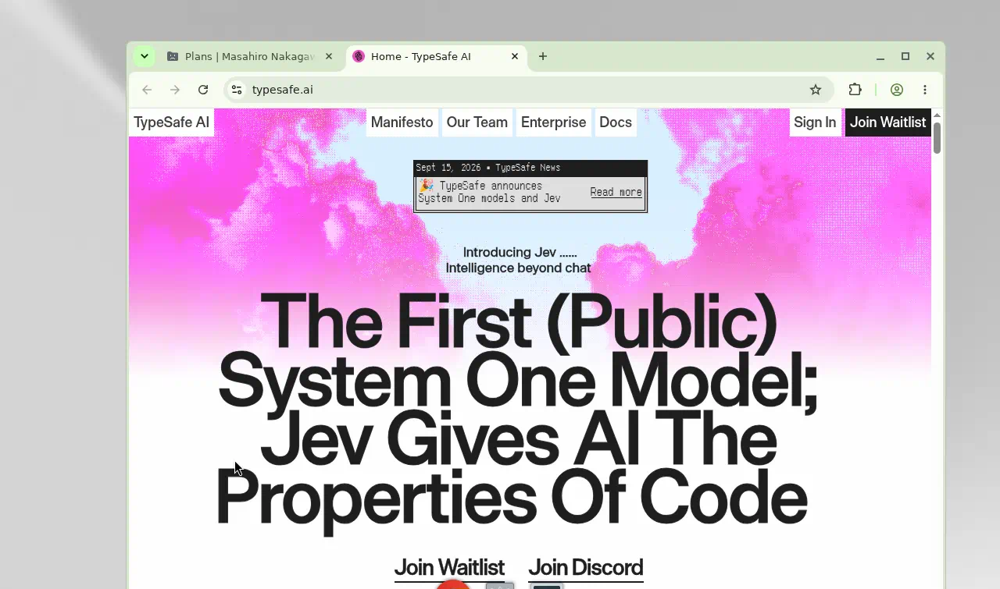
図3-2: typesafe.ai。右上の Join Waitlist
第3章 · 3 招待とログイン · 図3-3
2. 招待メールを待つ
件名は「TypeSafe AI: Your account is ready」のような形です。受付のメールと、使えるようになった案内のメールは別です。受付メールが来ただけでは、まだログインできません。迷惑メールフォルダも確認してください。
3. コンソールにログインする
Google アカウント、またはメールアドレスでログインします。「Email me a code instead」（コードを送る）方式もあります。
https://console.typesafe.ai/
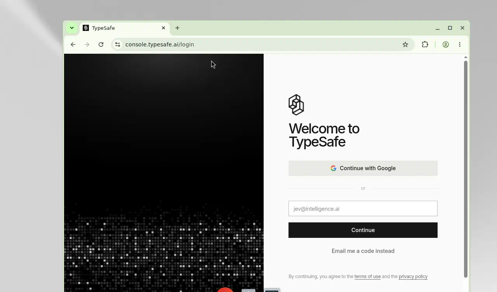
図3-3: console.typesafe.ai のログイン。Google とメールの入り口
第3章 · 4 残高 · 図3-4
4. 残高を確認する
新規アカウントにはクレジットが付くことがあります。ただし、誰でも同じ額・同じ期限とは限りません。自分の案内を読んでください。見るのは 3 つです。残高、期限、支払い方法（自動でチャージされる設定になっていないか）。金額や付与の条件は画面で確認してください。
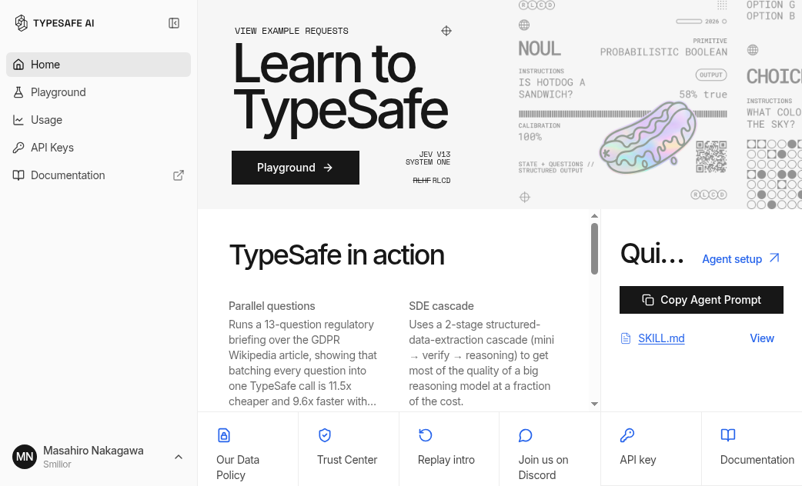
図3-4: コンソールのホーム。左に Playground / Usage / API Keys
ポイント
公式の招待が届く前でも、Jev を中継しているサービス経由なら叩けることがあります（執筆時点では Vercel AI Gateway、Cloudflare AI Gateway など。モデル名は typesafe-ai/jev）。ただし無料枠の対象外で、画面も本書とは違います。本書は公式コンソールの画面で進めます。
第3章 · 5 キーを発行 · 図3-5
第5章の curl で使うキーを、先に取っておきます。第4章の Playground だけなら、キーは要りません。
1. キー管理画面を開く
https://console.typesafe.ai/keys
2. 新しいキーを作る
名前は自分が分かるものにします（book-practice など）。用途が分かる名前にしておくと、あとから見分けられます。
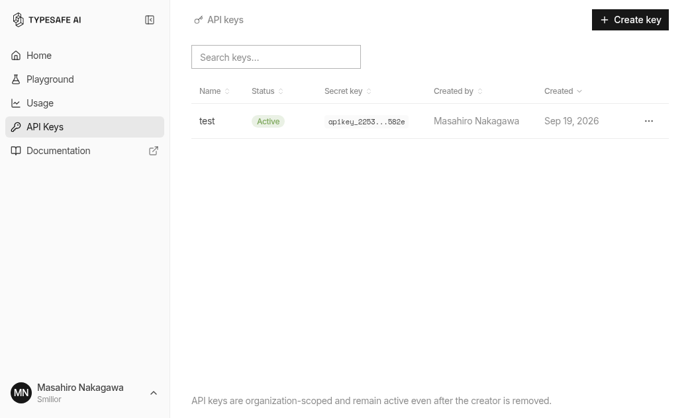
図3-5: API keys。右上の Create key から発行する。一覧の Secret key は途中までしか見えない
第3章 · 6 キーを控える
3. 表示されたキーをコピーする
この画面を閉じると、多くのサービスでは二度と全体を表示できません。その場で控えてください。発行直後のモーダルにはキー全文が出ますが、本書にはキーの文字列を載せません。手元だけで控えてください。
4. 発行したキーを控える
第5章の curl では、このキーをコマンドに直接書きます。本書の例では、いつも YOUR_API_KEY と書きます。手元で動かすときだけ、控えたキーに置き換えてください。
注意
キーは、それを持っている人なら誰でも、あなたの残高で Jev を叩けてしまう文字列です。GitHub（リポジトリ・Gist・Issue・PR）、チャットやメール、画面共有・録画・スクリーンショット、書籍やブログの本文には出さないでください。漏らしたと気づいたら、コンソールでそのキーを削除して、新しく作り直します。
第3章 · 7 使えるモデル
いま自分のキーで使えるモデルが何かを、先に見ておきます。執筆時点で返ってくるのは次のような別名です。
| 名前 | 説明 |
|---|---|
| jev-latest | いまの安定版を指す別名 |
| jev-preview | 次の版の先行公開。多くの点で良くなっているはず、という位置づけ |
どちらも別名です。実際に答えた版の番号は、返答のほうに入ります。執筆時点では、どちらも同じ版番号に解決されることがありました。これは第9章で効いてきます。
jev-latest の指す先は、あとから移ります。「先週と同じ質問なのに数字が変わった」というとき、モデルの版が移った可能性を疑えるように、ログには返答側の版番号を残します。実際に一覧を取る手順は、第5章の curl で扱います。本書のサンプルは、すべて jev-latest を指定します。
第3章 · まとめ
ポイント
アカウントとキーがそろいました。次の章では、まだコードを書かずに、ブラウザの Playground で数字を出します。
第4章 · 章扉
4
コードを書かずに、数字を出す
第4章 · 1 概要
キーを取る前に、まず画面で数字を見たい。僕はそう思って Playground から入りました。Playground は、ブラウザ上で Jev を試せる画面です。コードを 1 行も書かずに、材料と質問を入れて実行できます。
https://console.typesafe.ai/playground
この章では、問い合わせメール 1 文を材料にして、2 つのことを聞きます。緊急か（はい／いいえ）。どの部署が見るべきか（3 つの候補から 1 つ）。返事の文は、人か LLM が後で書きます。画面には入れる欄が 2 つあります。
| 欄 | 入れるもの |
|---|---|
| State | 判断の材料。問い合わせの本文そのまま。質問は書かない |
| Questions | 聞きたいこと。型（choice / score / noul）と、その中身 |
注意
State に質問を書かないでください。ここはあくまで材料です。「この問い合わせの担当部署を教えて」のような文を State に入れると、それ自体が判定対象の文章として読まれます。
第4章 · 2 緊急かどうか · 図4-1/4-2
現場の困りごと: 問い合わせの一覧を見ている。上から順に開く時間はない。急ぎのものだけ先に開きたい。state はダミーの問い合わせ 1 文です。実在の会社名は使いません。
3日前からStripeアカウントが連携できなくて、 売上が止まっています。至急対応してください。
questions は noul を 1 つです。ID は is_urgent とします。
このメッセージは緊急性や時間的な切迫を伝えているか
第4章 · Playground を開く · 図4-1
1. Playground を開く
コンソールのホームから、左メニューの Playground に入ります。ホームには使い方の案内やサンプルが並んでいますが、今回はここからすぐ左メニューへ進みます。

図4-1: コンソールのホーム。左の Playground から開く
第4章 · 画面の並び · 図4-2
画面の並びはこうなっています。左上が State（材料）、その下が Questions（聞きたいこと）、右が結果欄です。左下にモデル名が出ていて、jev-latest のままで構いません。
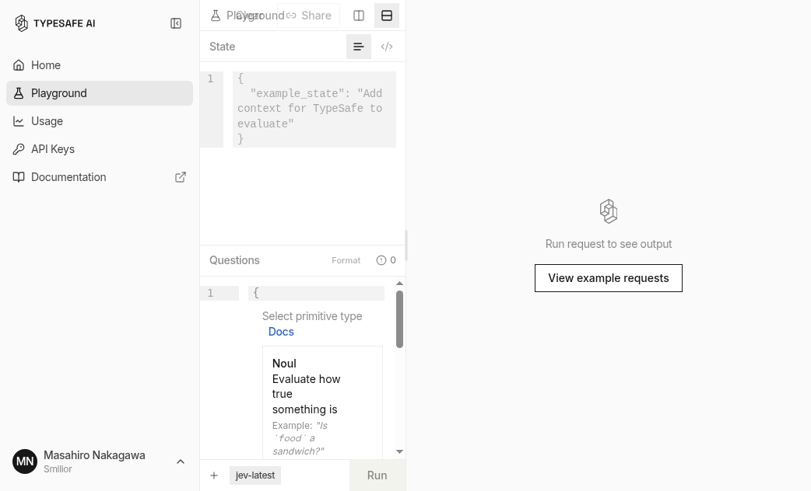
図4-2: Playground。左が入力、右が結果欄
第4章 · State を貼る · 図4-3
2. State に問い合わせ文を貼る
質問は書かない。材料だけです。貼った直後は、右の Response はまだ空のままです。
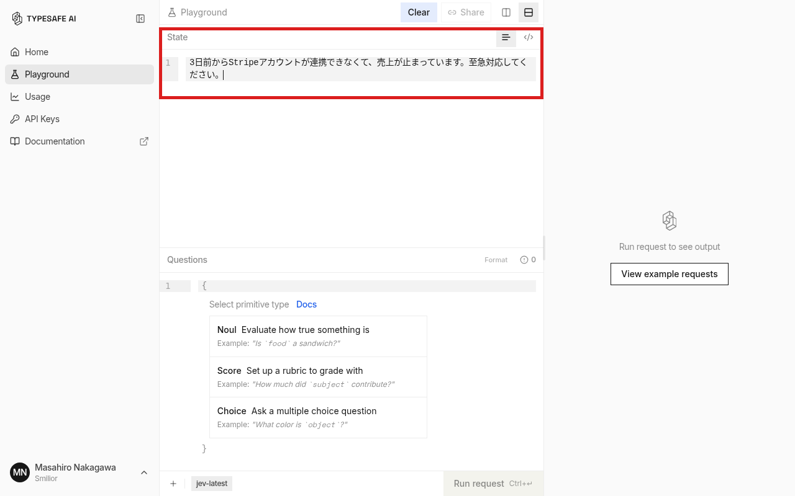
図4-3: 赤枠が State。ここに貼るのは材料だけ
第4章 · 質問を足す · 図4-4
3. Questions に質問を 1 つ足す
まず Add Question を押します。すると PRIMITIVES（プリミティブ＝使える型の一覧）が出ます。ここで必ず noul / score / choice の 3 つから型を選びます。
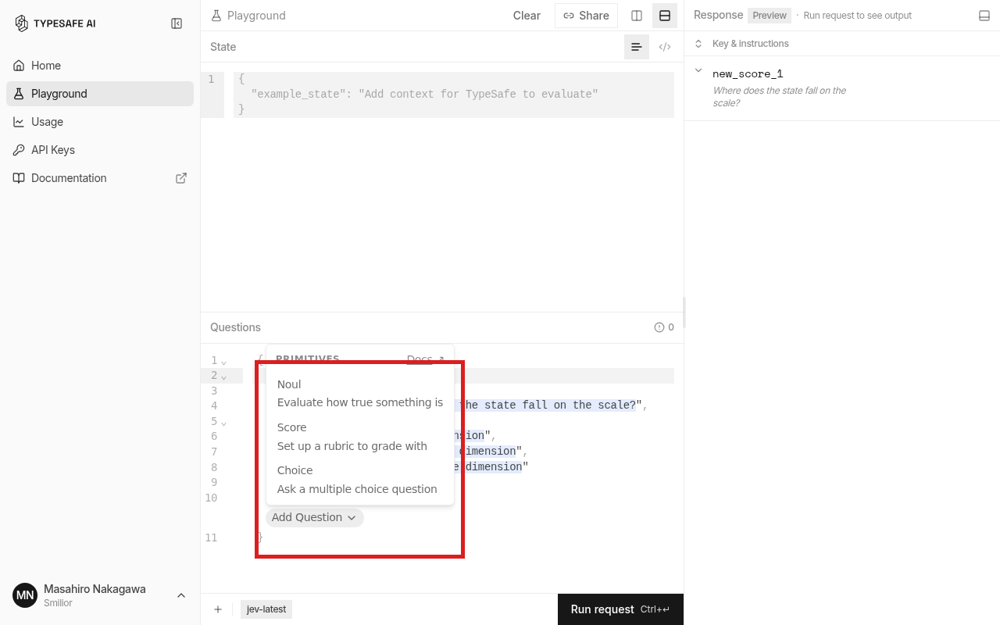
図4-4: 赤枠が Add Question。押すと型のメニューが出る
第4章 · 型の意味
画面のラベルは英語のままです。意味だけ日本語で押さえてください。
| 画面の語 | 意味 | いつ使うか |
|---|---|---|
| noul | 真偽・当てはまる度合い（はいの確率 0〜1） | 「緊急か」など、はいかいいえで答えたいとき。本章はまずこれ |
| score | ルーブリック（採点表）で点数づけ | 「低い／普通／高い」のように段階があるとき。第7章で使う |
| choice | 候補から 1 つ選ばせる | 部署やカテゴリなど、行き先が複数あるとき。候補リスト（criteria）が要る |
今回は noul を選びます。ID は is_urgent、instructions に先ほどの一文を書きます。noul では criteria を省略できます。今回は質問文だけで足ります。
第4章 · 型を選ぶ · 図4-5
メニューから型を選びます。ここで選び間違えると、返ってくる形そのものが変わります。
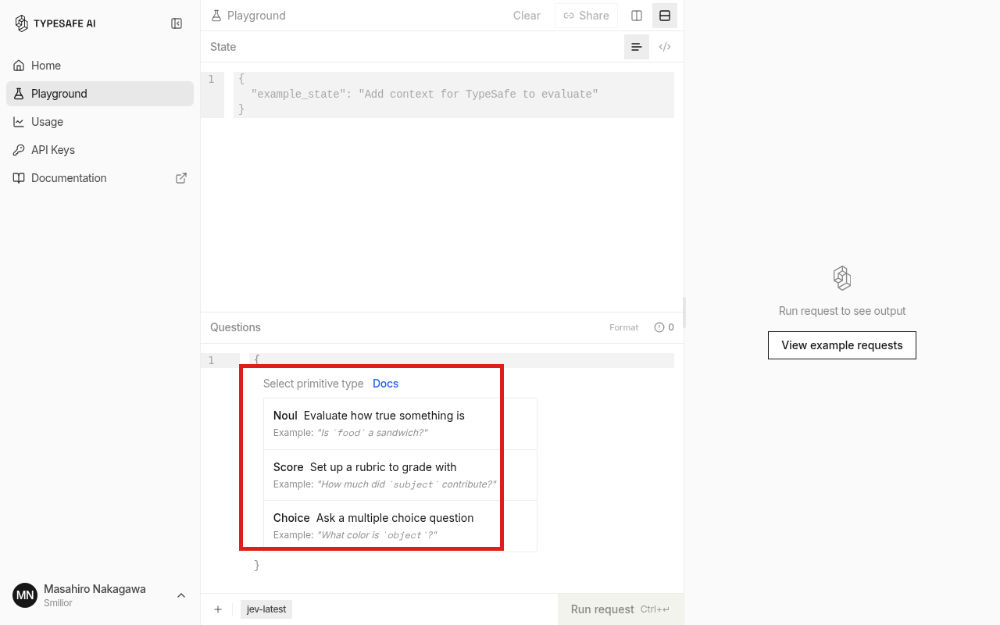
図4-5: 赤枠が型の選択。3 つから 1 つ選ぶ
第4章 · 質問を埋める · 図4-6
ID と instructions を埋めたところです。この時点ではまだ Run していないので、右の結果欄は空のままです。
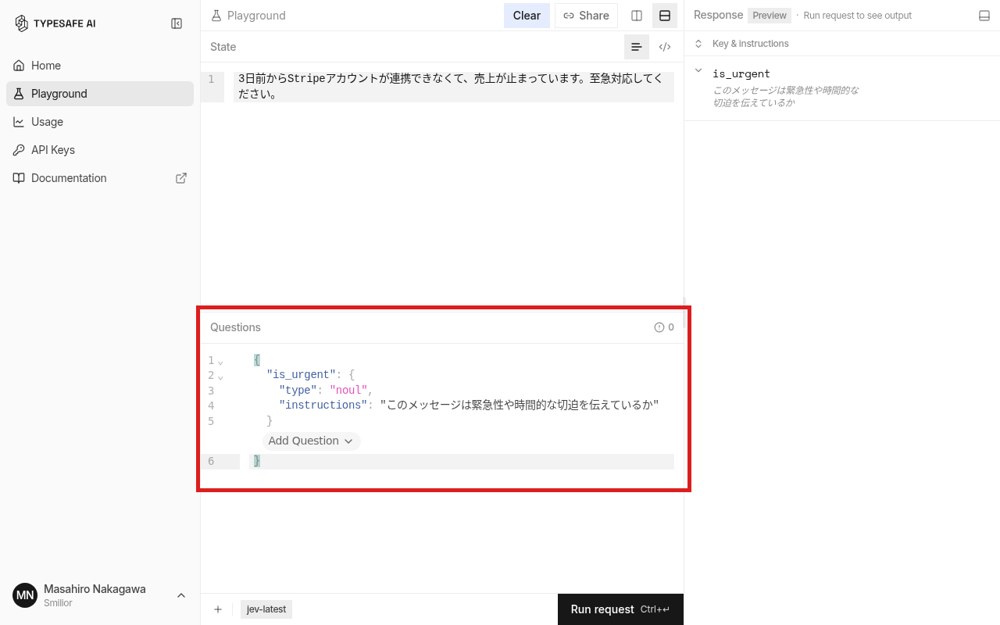
図4-6: ID と instructions を埋めたところ。まだ Run 前
第4章 · Run する · 図4-7
4. Run を押す
返ってきた値の例です（執筆時点の例。自分の画面では違う数字になります）。
is_urgent type: noul noul: 0.98
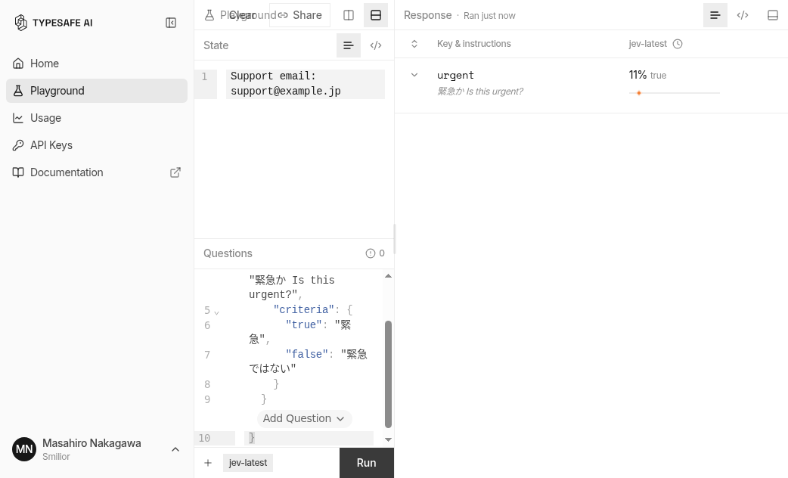
図4-7: Run したあと。右の Response に「はい」の確率が出る
第4章 · 6 材料を変える
押した瞬間に返ってきたはずです。これが Jev の速さです。0.98 は「ほぼ確実に緊急」です。noul に別枠の confidence は付きません。迷いの度合いは、この数値そのもので見ます。
5. State だけ変えて、もう 1 回 Run する
質問はそのままです。
今後の参考に、料金プランの一覧を送っていただけますか。 急ぎではありません。
例では noul が 0 に近づきます。
confidence が低いときの行き先
noul が 0.4〜0.6 のときは、急ぎの列にも通常の列にも自動では入れません。人が 1 回開いて読みます。0.5 を「弱いはい」として扱ってはいけません。
壊れ方を 1 つ。「お手すきのときで構いませんが、今週中にいただけると助かります」のような文は、真ん中に落ちやすいです。急ぎと言いながら急いでいない文、急いでいないと言いながら期限のある文が、現実には一番多く来ます。ここを自動で振り分けると、必ずどちらかで事故ります。止めます。
第4章 · 7 どの部署か · 図4-8
現場の困りごと: 急ぎだと分かった。次は、経理・技術・営業のどこに回すか。state はさっきと同じ問い合わせ文です。questions は choice を 1 つ、ID は department、instructions は「どのチームが対応すべきか」です。criteria は次の 3 つです。
| キー | 説明 |
|---|---|
| billing | 支払い・請求・サブスクリプションの問題 |
| technical | 不具合・障害・連携の問題 |
| sales | 料金・アップグレード・新規アカウントの質問 |
State を 1 つ目の問い合わせ文に戻し、is_urgent は残したまま choice を 1 つ足して Run します。返ってきた値の例です。
department
type: choice
choice: technical
confidence: 0.77
probabilities:
technical: 0.85
billing: 0.15
sales: 0.0
第4章 · 8 読み方 · 図4-8
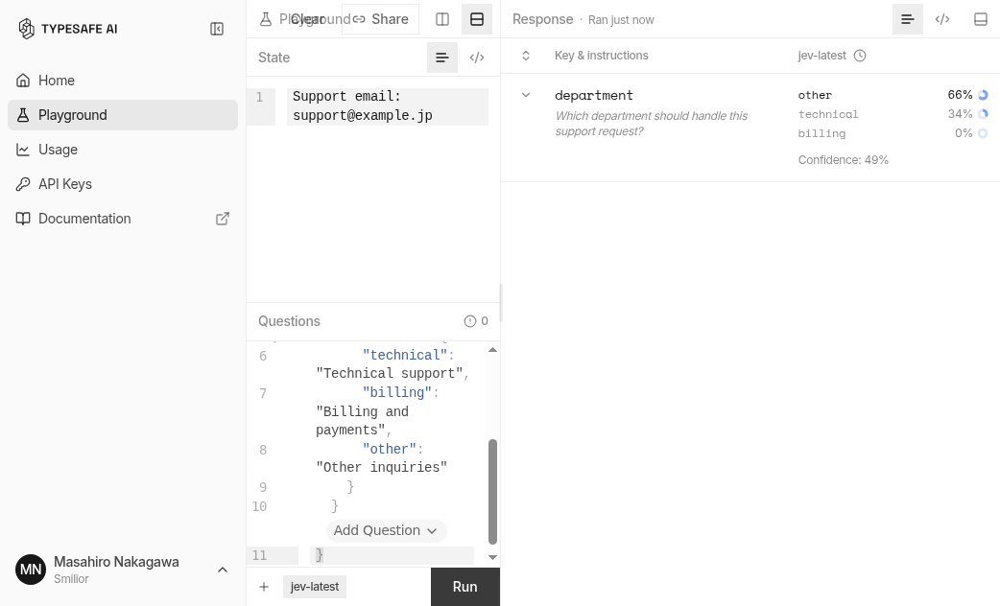
図4-8: Playground で choice を動かしたところ。右に候補ごとの確率と confidence
読み方は 3 つに分かれます。choice はいちばん確率が高い候補で、プログラムが普通に使う値。probabilities は全候補への票の割り振りで、合計は 1 になります。confidence は分布がどれだけ尖っているかで、1 に近いほど「この 1 つでいい」。
「連携できない」を技術の問題と見ています。ただし、売上が止まっているという話もあるので、課金にも 15% 残っています。この 15% が見えるのが、choice を使う意味です。
第4章 · 9 候補に無い材料
State だけ変えます。
先週の展示会、ブースが分かりやすくて助かりました。 ありがとうございました。
感謝の一文は、経理でも技術でも営業でもありません。ですが Jev は候補の外を作れません。だから 3 つのどれかを選びます。このとき confidence は低く出るはずです。実際に下がるかどうか、自分の画面で確かめてください。
これが第1章で書いた「候補を発明しない」の実際です。該当なしを許したいなら、other のような候補を自分で足します。足し方は第6章で扱います。
壊れ方を 1 つ。criteria の説明が重なると、confidence が下がります。billing に「支払いに関する不具合」と書き、technical に「連携の不具合」と書くと、決済連携の話でどちらにも票が割れます。カテゴリの説明は、そのカテゴリだけが持つ印に絞ります。
用語
答えと、進めてよいかは別の数字です。choice が何かは choice を見ます。自動で進めてよいかは confidence を見ます。この 2 つを分けて読むのが、Jev をプログラムに組み込むときの基本です。
第4章 · まとめ
ポイント
画面で数字が見えました。次の章では、同じことを curl で呼びます。ここを通すと、以降の作り物を画面でも API でも動かせるようになります。
第5章 · 章扉
5
画面でやったことを、そのまま JSON にする
第5章 · 1 概要
画面で数字が見えたら、次は同じことをコマンドから呼びます。僕にとっては、ここが「部品として使える」感覚の入口でした。使うのは curl だけです。Python も TypeScript も書きません。ターミナルが開ければ進められます。
macOS なら「ターミナル」、Windows なら WSL か Git Bash を使ってください。本章のコマンドは bash の書き方です。PowerShell では引用符の扱いが少し違います。
やることは 2 つです。使えるモデルの一覧を取ること。そして、第4章と同じ 2 問を投げることです。エンドポイントは 2 つしかありません。
| 用途 | メソッドと URL |
|---|---|
| モデル一覧 | GET https://api.typesafe.ai/v1/models |
| 判定 | POST https://api.typesafe.ai/v1/systemone |
判定は systemone の 1 本だけです。質問を増やしても、型を変えても、叩く先は変わりません。
第5章 · 2 送るものと返るもの
送る側は 3 つです。state（材料）、model（jev-latest）、questions（名前つきの質問一覧）。リクエストの骨組みは次のとおりです（短縮）。
{
"state": "判断の材料",
"model": "jev-latest",
"questions": {
"自分で付けた名前": { "type": "...", "instructions": "..." }
}
}
返る側も 3 つです。model（実際に答えた版）、answers（送ったのと同じ名前）、usage（トークン数）。
{
"model": "実際に答えた版",
"answers": { "送ったのと同じ名前": { ... } },
"usage": { "input_tokens": 0, "output_tokens": 0 }
}
questions のキー（is_urgent など）は、自分で付ける名前です。Jev には判断材料として渡りません。返答から取り出すためのラベルです。
第5章 · 3 キーの書き方
第3章で控えたキーを、curl のヘッダに直接書きます。本書の例では YOUR_API_KEY と書いてあります。手元で動かすときは、控えたキーに置き換えてください。
-H "Authorization: Bearer YOUR_API_KEY"
注意
キーは GitHub・チャット・画面共有・書籍に出さないでください。漏らしたと気づいたら、コンソールで削除して再発行します。うまくいかないとき、いちばん多いのはキーの前後に空白や改行が混ざっている場合です。返ってくるのは 401 になります。
作業フォルダは全書通じて ~/jev-practice です。長い JSON をファイルに書くときのために、先に作っておきます。
mkdir -p ~/jev-practice cd ~/jev-practice
第5章 · 4 モデル一覧
いちばん短い呼び出しで試します。判定はしないので、返ってくるのはモデルの名前だけです。ここが通れば、キーは生きています。
curl https://api.typesafe.ai/v1/models \ -H "Authorization: Bearer YOUR_API_KEY"
返ってきた例です（短縮）。
{
"models": [
{ "name": "jev-latest", "description": "..." },
{ "name": "jev-preview", "description": "..." }
]
}
| 返ってきたもの | 見るところ |
|---|---|
| 401 | キーが違う、または YOUR_API_KEY のまま置き換えていない |
| 403 | キーは正しいが権限がない。招待が有効か確認する |
| 何も返らない | URL の綴り。api.typesafe.ai であって console ではない |
第5章 · 5 同じ 2 問を投げる
材料も質問も、第4章とまったく同じです。画面でやったことが、そのまま JSON になります。紙面では骨組みだけ示します。
curl -X POST https://api.typesafe.ai/v1/systemone \
-H "Authorization: Bearer YOUR_API_KEY" \
-H "Content-Type: application/json" \
-d '{ "state": "…Stripe…至急…",
"model": "jev-latest",
"questions": { "is_urgent": {…}, "department": {…} } }'
返ってきた例です（短縮）。緊急度（noul）と部署（choice）が並びます。
{
"model": "jev-1.13.0",
"answers": {
"is_urgent": { "type": "noul", "noul": 0.98 },
"department": {
"type": "choice",
"choice": "technical",
"confidence": 0.77,
"probabilities": { "technical": 0.85, "billing": 0.15, "sales": 0.0 }
}
},
"usage": { "input_tokens": 528, "output_tokens": 73 }
}
第5章 · 6 返答の読み方
画面で見た数字と同じものが返っています。同じ材料・同じ質問なら、返ってくる数字もほぼ同じです。同じ入力で毎回答えがぶれる、ということは起きません。返答の 3 つの項目を、順に読みます。
上の数値は例です。質問の数や材料の長さで変わるので、自分の値を見てください。
第5章 · 7 ファイルで渡す
シェルに JSON を直接書くと、引用符と改行で崩れます。日本語の問い合わせ文をそのまま貼ると、途中の改行でシェルがコマンドを分割し、閉じ引用符が足りない、と止まることがあります。長い材料を投げるときは、ファイルに書いて渡します。
{
"state": "3日前からStripeアカウントが連携できなくて、売上が止まっています。至急対応してください。",
"model": "jev-latest",
"questions": {
"is_urgent": {
"type": "noul",
"instructions": "このメッセージは緊急性や時間的な切迫を伝えているか"
}
}
}
curl -X POST https://api.typesafe.ai/v1/systemone \ -H "Authorization: Bearer YOUR_API_KEY" \ -H "Content-Type: application/json" \ -d @request.json
-d のあとに @ファイル名 と書くと、その中身が本文になります。以降の章の JSON は、この形で試すのが楽です。
第5章 · 8 state に JSON
state は文字列でなくてもよいです。JSON のオブジェクトも渡せます。2 つのものを突き合わせたいときは、このほうが取り違えが減ります。質問の instructions からは、名前で参照できます。第8章で使う残業の規程と主張の例（state 部分）は次のとおりです。
"state": {
"source": "残業は原則として事前申請とする。",
"claim": "当社では残業の申請は不要です。"
}
ポイント
叩く先は 1 本だけです。第6章以降でやることは、すべて state と questions の中身を変えるだけ。curl の形は毎回同じなので、付録B に雛形を置いています。
まとめ
ポイント
画面と API で、同じことができるようになりました。次の章からは材料を自分の身近なものに変えて、小さな作り物を動かします。
第6章 · 章扉
6
受信箱を材料にして、1 問ずつ動かす
第6章 · 1 概要
第4章と第5章では、公式サンプルに近い問い合わせ文を使いました。この章からは、材料を自分の身近なものに変えます。最初の題材は受信箱です。僕が毎朝いちばん最初に開くもので、開く前から中身がだいたい想像でき、正解が自分で分かる。Jev の練習には、これがいちばん向いています。
この章で作るものは 2 つです。人が自分宛てに書いたメールか、一斉配信か（noul 1 問）。メールの種類はどれか（choice 1 問。other を足す前後）。どちらも、あなたなら 1 秒で答えられる判定です。それがこの章の狙いです。
用語
公式ドキュメントは、System One モデルに向く質問をこう説明しています。「それぞれの質問が、1 つの、範囲のはっきりしたことだけを聞いているとき、いちばんうまく働く。とっさの見極めだと思えばよい」。あなたが数秒で答えられない質問は、Jev にも向きません。
だから本書では、契約書の法的リスク判定や、採用の合否のような題材を使いません。読者が正解を確かめられないからです。
第6章 · 2 人が書いたメールか
現場の困りごと: 受信箱の大半は、メルマガ・通知・広告です。人が自分宛てに書いたものだけ、先に見たい。state は、ダミーのメール 1 通です。件名と本文を、まとめて貼ります。
件名: 【9月号】今月のおすすめ機能とセミナーのご案内 いつもご利用ありがとうございます。 今月のアップデート情報をお届けします。 配信停止はこちらから。
questions は noul を 1 つ。ID は from_human とします。
このメールは、人が自分宛てに書いたものか。 一斉配信・通知・広告ではないか
第6章 · 3 動かして比べる
1. Playground に貼って Run する
State に上のメールを貼り、Questions に noul を 1 つ足します。返ってきた値の例です。
from_human type: noul noul: 0.03
0 に近い値が返るはずです。あなたがこのメールを 1 秒で判別できたのと、同じ結論になっています。「配信停止はこちらから」という一文が決め手です。
2. State だけ変えて、もう 1 回 Run する
件名: 見積もりの件 お疲れさまです。先ほどの見積もり、 金額の桁が1つ違っていませんか。確認をお願いします。
今度は 1 に近い値が返ります。金額の確認を頼んでいるので、一斉配信ではありません。ここまでが、Jev のいちばん小さい使い方です。質問は 1 つ、返ってくるのは数字 1 つ。受信箱に届いた順にこれを流せば、人が書いたメールだけを上に集められます。
confidence が低いときの行き先
noul が 0.4〜0.6 のときは、どちらの山にも入れません。普通の受信箱に残して、人が目で見ます。「〇〇様」と個人名で始まる営業メールは、真ん中に落ちやすいです。聞きたいことが「人間が書いたか」なのか「自分宛てか」なのかを、先に決めておく必要があります。
第6章 · 4 メールの種類
現場の困りごと: 人が書いたメールだと分かった。次は、それが何の話なのかで分けたい。state はさっきの 2 通目です。questions は choice を 1 つ、ID は mail_type、instructions は「このメールの用件はどれか」。criteria は次の 3 つで、わざと other を入れずに始めます。
| キー | 説明 |
|---|---|
| request | こちらに作業や確認を頼んでいる |
| report | 報告・共有。こちらの作業は求めていない |
| schedule | 日程の調整・確認 |
Run すると、返ってきた値の例はこうなります。
mail_type
type: choice
choice: request
confidence: 0.88
probabilities:
request: 0.92
report: 0.06
schedule: 0.02
第6章 · 5 逃げ道を足す
ここからが本題です。候補に無いメールを投げます。State だけ変えます。
件名: 長らくお世話になりました 今月末をもって退職することになりました。 在職中は大変お世話になりました。
このメールは、依頼でも報告でも日程調整でもありません。ですが Jev は候補の外を作れないので、3 つのどれかを選びます。おそらく report が選ばれ、confidence は下がるはずです。第1章で読んだ「逃げ道のない候補を指定すると、正解がなくてもどれかを選ぶ仕組み」が、ここで目に見えます。
criteria に 1 行加えて、同じメールをもう 1 回 Run します。
"other": "どれにも当てはまらない"
今度は other が選ばれるはずです。criteria を 1 行足しただけで、判定が正しくなりました。モデルは変えていません。これが本書でいちばん使う直し方です。数字が合わないとき、最初に疑うのはモデルではなく、こちらが渡した候補と質問文です。
第6章 · 6 curl で同じことを
curl で同じことをやるなら、state と questions だけ差し替えます。エンドポイントは第5章と同じです。
{
"state": "件名: 長らくお世話になりました\n\n今月末をもって退職することに…",
"model": "jev-latest",
"questions": {
"mail_type": {
"type": "choice",
"instructions": "このメールの用件はどれか",
"criteria": {
"request": "こちらに作業や確認を頼んでいる",
"report": "報告・共有。こちらの作業は求めていない",
"schedule": "日程の調整・確認",
"other": "どれにも当てはまらない"
}
}
}
}
壊れ方を 1 つ。request の説明に「返信がほしい旨が書かれている」まで足すと、退職の挨拶まで依頼に寄ります。挨拶文にも「よろしくお願いします」が入っているからです。カテゴリの説明は、そのカテゴリだけが持つ印に絞ります。
まとめ
ポイント
質問を 1 つずつ動かしました。次の章では、同じ材料に質問を 2 つ、3 つと並べます。1 回の呼び出しで同時に答えが返ります。
第7章 · 章扉
7
同じ材料に、2 つ 3 つと並べる
第7章 · 1 概要
領収書の科目は決まった。でも、私用が混ざっていないかも、同じ材料で同時に知りたい。第6章では、質問を 1 つずつ動かしました。この章では、同じ材料に質問を 2 つ、3 つと並べます。
Jev は、1 回の呼び出しで複数の質問に同時に答えます。裏側で並列に処理されるので、質問が 1 つのときと 3 つのときで、かかる時間はほとんど変わりません。あとで使うかもしれない質問も、先に載せて構いません。要らない答えは、コードが無視します。
この章で作るものは 2 つです。領収書 1 枚に、科目と私的利用の疑いを聞く（choice＋noul）。Slack の一文に、意図と返信要否と急ぎ度を聞く（choice＋noul＋score）。2 つ目で、score を初めて動かします。
注意
質問を複数並べるときは、state も questions も、全部を同じ言語に揃えてください。質問だけ英語にすると、どちらの読みで判定されたのか分からなくなります。
第7章 · 2 領収書に 2 つ聞く
現場の困りごと: 月末の経費精算。領収書は文字に起こしてあります。科目を決めるのはほぼ機械的ですが、たまに私用が混ざるので、そこだけ目で見たい。state は JSON で渡します。項目が分かれているほうが、取り違えが減ります。
{
"店名": "カフェ・ミナミ",
"金額": 1290,
"日時": "2026-09-18 14:20",
"人数": 2,
"メモ": "A社と次回打ち合わせの日程調整"
}
{
"account": {
"type": "choice",
"instructions": "この支出の勘定科目はどれか",
"criteria": {
"会議費": "打ち合わせに伴う飲食・会場費",
"交際費": "接待・贈答。取引先をもてなす目的",
"消耗品費": "文房具・備品など物品の購入",
"その他": "どれにも当てはまらない"
}
},
"personal_suspect": {
"type": "noul",
"instructions": "この支出は、業務ではなく私的な利用が疑われるか"
}
}
第7章 · 3 結果を読む
Playground の State に上の JSON を貼り、Questions に choice と noul を両方足します。Run は 1 回です。返ってきた値の例です。
account choice: 会議費 confidence: 0.94 personal_suspect noul: 0.23
科目は会議費で、ほぼ迷っていません。私的利用の疑いは 0.23 なので、薄い。この 1 枚は、目で見なくてよいと判断できます。同じ質問のまま、State だけ変えます。日曜の夜、1 人、メモなし。
{
"店名": "カフェ・ミナミ",
"金額": 1290,
"日時": "2026-09-21 21:40",
"人数": 1,
"メモ": ""
}
例では personal_suspect が上がります。あなたが見ても同じ判断をするはずです。メモが空の領収書は、科目の confidence も一緒に下がります。判断に要る情報が材料に無いからです。これはモデルの問題ではありません。メモを書いてもらう運用を先に直します。
第7章 · 4 3 つの型を全部載せる
現場の困りごと: Slack のチャンネルが流れます。自分宛てでない投稿も多い。返信が要るものだけ拾いたい。ついでに、今日中なのか明日でいいのかも知りたい。state はダミーの 1 文です。
明日15時の定例、30分うしろにずらせますか？
{
"intent": {
"type": "choice",
"instructions": "この投稿の用件はどれか",
"criteria": {
"日程調整": "会議や予定の時間・日付の変更や確認",
"依頼": "作業や確認を頼んでいる",
"共有": "報告・周知。作業は求めていない",
"雑談": "業務の用件ではない"
}
},
"needs_reply": {
"type": "noul",
"instructions": "この投稿は、こちらからの返信を必要としているか"
},
"urgency": {
"type": "score",
"instructions": "この投稿に、いつまでに返すべきか",
"criteria": [
"今日中でなくてよい",
"今日中には返したい",
"いますぐ返したほうがよい"
]
}
}
第7章 · 5 score の読み方
score の criteria は配列です。choice と違って、並び順に意味があります。上から 0 番、1 番、2 番。低い順に並べます。State を上の 1 文に差し替え、Questions を 3 つにして Run は 1 回。返ってきた値の例です。
intent
choice: 日程調整
confidence: 0.97
needs_reply
noul: 0.91
urgency
score: 1.42
confidence: 0.71
legend:
0: 今日中でなくてよい
1: 今日中には返したい
2: いますぐ返したほうがよい
score の読み方だけ、ほかの 2 つと違います。返ってきた 1.42 は、1 番と 2 番のあいだで、2 番寄りという意味です。整数ではありません。legend は、送った criteria を番号付きで返してきたものです。整数に丸めたいなら、コードが丸めます。Jev は丸めません。
第7章 · 6 質問は分けて載せる
State だけ変えて、もう 1 回 Run します。質問はそのままです。
来月の懇親会、日程はいつがよさそうですか？
例では intent は日程調整のまま、urgency が 0 に近づきます。同じ日程の話でも、明日の定例と来月の懇親会では急ぎ方が違う。あなたの感覚と合っているはずです。
意図と返信要否を 1 つの choice に詰めない。急ぎ度と重要度を 1 つの score に詰めない。分けて載せると、数字が低かったときにどれを止めればいいかが決まります。「日程調整だが、急ぎかどうかは分からない」という状態を、そのまま扱えます。1 つにまとめると、この状態が消えます。質問を 3 つに増やしても、1 回の呼び出しで済みます。分けることに、速さの上の損はありません。
confidence が低いときの行き先
urgency の confidence が低いときは、急ぎの印を自動で付けません。普通の列に置きます。needs_reply が 0.91 なら、返信待ちの印だけは自動で付けてよい、と自分で決めて構いません。質問ごとにしきい値を変えます。
まとめ
ポイント
数字は出そろいました。次の章では、その数字で「自動してよいか」を決めます。しきい値を自分で 3 行書きます。
第8章 · 章扉
8
しきい値を、自分で 3 行書く
第8章 · 1 概要
僕が仕事でいちばん失敗したくないのが、ここです。間違った規程を社員に伝えてしまうこと。第6章と第7章で、分類と、はいの確率と、段階を見ました。この章では、その数字で自動してよいかを決めます。
ここまで何度か書いてきたことを、もう一度だけ。choice が返す答えは、何かを表します。confidence は、進めてよいかを表します。この 2 つは別の数字です。「経理」と返ってきても、confidence が 0.42 なら、それは経理だと決まったわけではありません。
この章で作るものは 2 つです。社内チャットボットの回答が、規程と合っているかを見る（choice）。返ってきた数字を 3 つの行き先に振り分ける、しきい値を決める。
注意
取り消しにくい操作（顧客への自動送信、決済の確定など）は、本編でコードにしません。行き先の設計と、頭の中の if までにとどめます。
第8章 · 2 規程と回答文
現場の困りごと: 社内のチャットボットが「規程ではこうなっています」と答えます。たまに違うことを言います。全部を人が確認するのは無理ですが、間違ったまま社員に伝わるのも困る。state をオブジェクトで渡します。2 つのものを突き合わせるときは、文字列 1 本にまとめないでください。
{
"規程": "残業は原則として事前申請とする。緊急の場合は、事後に理由を報告する。",
"回答文": "当社では残業の申請は不要です。"
}
{
"relation": {
"type": "choice",
"instructions": "`規程`は`回答文`を支えているか、反しているか、触れていないか",
"criteria": {
"支えている": "規程が、その内容を認めている。または直接そう読める",
"反している": "規程が、その内容の反対を言っている",
"触れていない": "規程は、その内容について何も書いていない"
}
}
}
第8章 · 3 結果と、回答文を変える
instructions から名前で参照しています。何と何を見比べるのかを、はっきり書いてあります。Run した結果の例です。
relation choice: 反している confidence: 0.93
あなたが読んでも「反している」です。confidence 0.93 なら、この 1 件は自動で落として構いません。回答文を書き直すのは Jev ではありません。落とすか、人に回すかを決めるのがコードの仕事です。
回答文だけ変えます。規程はそのままです。「残業は、原則として事前に申請してください。」なら、例では「支えている」と、高い confidence が返ります。もう 1 つ、規程が何も言っていない回答文（「在宅勤務は週 3 日までです。」）を試すと、例では「触れていない」です。ただし confidence は、1 回目より下がることがあります。「無い」を確信するのは「ある」を確信するより難しいからです。
壊れ方を 1 つ。規程を「残業は事前申請とする。」の 1 行だけにすると、緊急時の事後報告が消えます。「緊急なら事後でよい」という回答文に対して、間違った答えが返ります。直すのはモデルではなく、貼る規程の範囲です。第9章で扱います。
第8章 · 4 しきい値 · 図8-1
ここまで「confidence が低いときの行き先」と書いてきました。この節で、その数字を決めます。行き先は 3 つです。
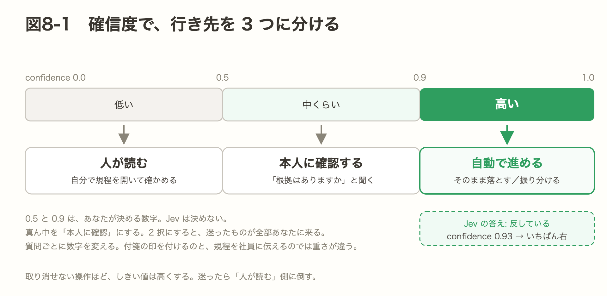
図8-1: 真ん中に「本人に確認する」を置くのが要点
真ん中を「本人に確認する」にしているのが要点です。自動か人かの 2 択にしないでください。2 択だと、迷ったものが全部人に流れ込んで、結局あなたが全部読むことになります。
第8章 · 5 自分の数字を決める
上の引用チェックに当てはめると、こうなります（数字は例）。
反している + confidence 0.93 → 自動で落とす 触れていない + confidence 0.61 → 回答した人に確認する 支えている + confidence 0.44 → 人が規程を開いて確かめる
自分の数字を決めます。紙に 3 行書けば足ります。決め方は 1 つです。間違えたときの取り返しのつかなさで決めます。
| 間違えたときに起きること | しきい値 |
|---|---|
| フォルダを間違える。あとで動かせる | 低くてよい |
| 社員に誤った規程を伝える。訂正が要る | 高くする |
| 顧客にメールが出てしまう。取り消せない | 自動にしない |
最初は高めに置いてください。下げるのは、外した記録を見てからです。上げるのはいつでもできます。
第8章 · 6 頭の中の if
決めたしきい値を、頭の中の if にします。フレームワークは要りません。実行コード（送信・決済など）にはしません。
もし relation が「反している」で confidence がしきい値以上なら
その回答文を落とす（人が直す列へ）
そうでなく confidence が低いしきい値未満なら
人が読む列に入れる
それ以外は
回答した人に確認する
これがこの本で言う「コードが決める」です。Jev はこの if を書いてくれません。
壊れ方を 1 つ。しきい値を 1 つ決めて、全部の質問に使い回すと壊れます。第7章の needs_reply は高めでも自動にしてよい場合がありますが、この章の「支えている」を同じ数字で自動にするのは危ない。質問ごとに、間違えたときの重さが違います。
choice が「支えている」でも、confidence が低ければ使いません。noul が 0.5 なら、出しません。作り物を 1 つ足すたびに、先に書くのはしきい値です。Jev はしきい値を決めません。決められるのは、間違えたときに責任を取る人だけです。
まとめ
ポイント
数字の使い方が決まりました。次の章では、数字が自分の読みと合わないときに、どこを直すのかを順に見ます。
第9章 · 章扉
9
モデルより先に、材料と質問を疑う
第9章 · 1 概要
返ってきた数字が、自分の読みと合わない。僕も最初は、すぐにモデルを変えたくなりました。たとえば、どう見ても日程調整の投稿が「共有」に分類される。ここまで動かしてくると、必ず一度はぶつかります。jev-latest を jev-preview にすれば良くなるのではないか、と思います。ほとんどの場合、良くなりません。
直す場所は、たいてい次の 3 つのどれかです。
この章では、この 3 つを順に直します。テスト文は、第6章から第8章で使ったものをそのまま使い回します。新しい題材は足しません。同じ文で、直す前と後を比べないと、直ったかどうかが分からないからです。
第9章 · 2 材料が薄い
いちばん多い原因です。そして、いちばん気づきにくい。社内文書の文体チェックを例にします。「AI が書いたような言い回し」を見つけたい。まず、言い回しを単語で渡してみます。state はこれだけです。
効く
questions は noul 1 つ。「この言い回しは、AI が書いた文章に出てきやすいか」。例では、低い数字が返ります。ところがあなたの感覚では、「効く」は AI がよく使う言い回しのはずです。外れているのは Jev ではありません。
キャッシュが効くので二回目は速い ← 普通の文 この設定が一番効くんだよね ← AIっぽい文
同じ語です。違うのは、何が効くのかを言っているかどうか。単語だけ渡した材料には、その違いが入っていません。
第9章 · 3 文で渡す
state を文に変えます。questions も、聞きたいことに合わせて書き直します。
state: この設定が一番効くんだよね
質問: この文は、何が効くのかを言わずに「効く」の一言で
済ませていないか
例では 0.9 前後が返ります。もう 1 文、比較用に「キャッシュが効くので二回目は速い」を投げると、例では 0.2 前後まで落ちます。同じ「効く」を、正しく区別できています。直した場所は 2 つです。材料を単語から文にした。質問を「AI っぽいか」から「何が効くのかを言っているか」に具体化した。モデルは触っていません。
資料を丸ごと渡しても外れます。第8章の引用チェックで、規程を「残業は原則として事前申請とする。」の 1 行だけにしてみます。回答文「緊急のときは、あとから理由を報告すれば大丈夫です。」は、本当は規程どおりです。ですが「緊急の場合は、事後に理由を報告する」という一文が規程から落ちているので、Jev には確かめようがありません。「触れていない」か、低い confidence に落ちます。
直し方は、判定に使う節を例外まで含めて貼ることです。ただし、薄いのと厚すぎるのは別です。入力に載せられる長さには上限があります（第1章）。関係のない節を大量に混ぜると、判断に使う一文が埋もれます。貼るのは、判定に関係する節とその例外まで。規程全文ではなく、残業の節だけ。
第9章 · 4 説明が重なる
第7章の領収書で、科目の説明を少し変えてみます。
| キー | 変えた説明 | 元の説明 |
|---|---|---|
| 会議費 | 打ち合わせでの飲食 | 打ち合わせに伴う飲食・会場費 |
| 交際費 | 取引先との飲食 | 接待・贈答。取引先をもてなす目的 |
「A社と次回打ち合わせの日程調整」という領収書を、もう一度 Run します。A社は取引先で、用件は打ち合わせです。両方に当てはまります。confidence が下がるはずです。
直し方は、各カテゴリの説明をそのカテゴリだけが持つ印に絞ることです。違いは「もてなす目的かどうか」。ここだけが両者を分けます。取引先という語は、どちらにも出てきます。だから決め手になりません。同じ領収書をもう一度 Run すると、confidence が戻ります。
カテゴリを増やして曖昧さを吸収しようとしないでください。「会議費（接待を含む）」のような箱を足すと、その箱がまた別の箱と重なります。減らすのは説明の重なりであって、カテゴリの数ではありません。
第9章 · 5 確信度を見ていない
第7章の Slack で、urgency の confidence は 0.71 でした。intent は 0.97 でした。同じ 1 回の呼び出しで返ってきた数字ですが、信用してよい度合いが違います。壊れるのは、画面でいちばん大きく出ている答えだけを見て進めるときです。confidence 0.44 の「日程調整」も同じ列に入り、あとから「なぜこれが入っているのか」を追えなくなります。
直し方は、第8章で決めた 3 行（図8-1）を、実際にコードの先頭に書くことです。
もし confidence が十分に高いなら 自動で進める もし confidence が明らかに低いなら 人が読む それ以外は 本人に確認する
テスト文は、第8章の「在宅勤務は週 3 日まで」（confidence が下がりやすい）と、第7章の「来月の懇親会、日程はいつがよさそうですか？」（urgency の confidence が下がりやすい）です。見るのは、返ってきたカテゴリの名前ではありません。止まったかどうかです。
第9章 · 6 モデルより先に
jev-latest を jev-preview に変えても、薄い材料と重なった説明は残ります。そして別名が指す版は、あとから移ります（第3章）。モデルを変えて直ったように見えても、次の版でまた戻ります。
直した記録は、state と questions の組で残してください。「この文で、この質問なら、この数字が出た」。これが残っていれば、版が移ったときに比べられます。
ポイント
直す順番は、材料 → 質問と候補 → しきい値の見直し、の順です。モデルの差し替えは最後で構いません。
まとめ
ポイント
ここまでで、画面と API と、小さな作り物がひと通り動きました。最後に、これからどう広げるかを書きます。
おわりに 1/3
ここまでで、画面と API と、小さな作り物を動かしました。Jev は文章を書きません。state と questions を渡すと、分類と数字が返ってきます。その数字を見て何をするかは、あなたが書いたコードが決めます。文章が要るところは、いままで通り生成 AI に任せます。
向く仕事は、同じ型の判断を何度も繰り返すことです。本書で手を動かした範囲だと、こうなります。
向かない仕事は、返事を書くこと、要約すること、コードを書くこと、そして候補に無いカテゴリを Jev に発明させることです。
おわりに 2/3
自分の仕事に、いちばん近い作り物を 1 つ移してください。第6章のメール仕分けでも、第8章の引用チェックでも構いません。やることは 3 つです。
それ以上は、動いてから足します。最初から大きく作ると、外したときにどこが悪いのか分からなくなります。うまくいかないときは、第9章に戻ってください。モデルを変える前に、材料と質問を疑う。本書でいちばん繰り返したことです。
おわりに 3/3
これまで、判定は生成 AI にやらせるのが当たり前でした。分類してほしいときも、可否を決めてほしいときも、とりあえず LLM に投げる。遅くても高くても、ほかに方法がなかったからです。この前提が、崩れようとしています。
これから増えるのは、判断だけを Jev のようなモデルに任せて、返ってきた数字でプログラムが分岐する形だと思います。文章が要るところだけ LLM を呼ぶ。第2章で見た 5 つの場面は、どれもその形をしていました。メールを分類するのは Jev、返信文を書くのは LLM、フォルダへ動かすのはコード。役割が 3 つに分かれています。
もう 1 つの道もあります。いまモデルを作っている各社が、同じ考え方を自社の仕組みに取り込んでいく道です。判断を速く返す仕組みは、エージェントの内側でいちばん効く場所にあります。ツールの選択、次の一手の決定、危険な操作の検知。どれも「選ぶだけ」の仕事です。どちらに転ぶかは分かりません。ただ、判断と実行を分けて考えるという見方は、どちらに転んでも残ります。
本書で実際にやったのは、この 2 つでした。「どの部署か」と「自動で振ってよいか」を、別々の数字として扱ったこと。そして、判断の軸を criteria に書き出したこと。書き出せたから、機械に渡せました。書き出せないものは、そもそも人にも引き継げません。
最後までお読みいただき、ありがとうございました。
smilior.com
中川 将広
付録A 1/3
| ことば | 意味 |
|---|---|
| Jev（ジェブ） | TypeSafe AI が 2026 年 9 月に発表した AI モデル。文章を書かず、判断だけを返す |
| System One Model | この種類のモデルの呼び名。Jev が第 1 号。『ファスト＆スロー』の「システム 1」から |
| LLM（大規模言語モデル） | 文章を生成する AI。本書では「文章を書くほう」の意味で使う |
| jev-latest / jev-preview | モデル指定に使う別名。前者が安定版、後者が先行版。実際に答えた版は返答の model に入る |
| RLCD | Jev の学習方法として公表されている名前。本書では名前だけ扱う |
付録A 2/3
| ことば | 意味 |
|---|---|
| state（ステート） | 判断の材料。文字列でも JSON オブジェクトでもよい。聞きたいことは書かない |
| questions | 聞きたいこと一覧。キーは自分で付ける名前。返答から取り出すためのラベル |
| instructions | その質問の本文。Jev は字義どおりに読む |
| criteria | 選択肢や段階の定義。choice はオブジェクト、score は配列、noul は省略可 |
| choice | 候補から 1 つ選ぶ型。候補・全候補の確率・confidence が返る |
| score | 順番のある段階のどこかを返す型。整数とは限らない。legend が付く |
| noul | はい／いいえの確率を返す型。confidence は付かない |
付録A 3/3
| ことば | 意味 |
|---|---|
| answers | 答えの本体。送った questions と同じキーで返る |
| probabilities | 全候補・全段階への票の割り振り。合計は 1。見るのは 1 位より 2 位 |
| confidence（確信度） | 答えの分布がどれだけ尖っているか。choice と score に付く |
| legend | score の答えに付く、段階の番号と説明の対応表 |
| usage | 使ったトークン量。input_tokens が課金対象、output_tokens は無料（執筆時点） |
| しきい値 | 自動で進めてよいかを決める境界の数字。Jev は決めない。呼び出し側が持つ |
| ハルシネーション | Jev で「起きない」と言われるのは型についての保証。中身の正しさの保証ではない |
| プロンプトインジェクション | 判定させる文章に命令を仕込み、判定を歪めようとする攻撃 |
付録B 1/4
第5章で使った形をまとめたものです。第6章以降の作り物は、すべてこの雛形の state と questions を差し替えるだけで動きます。新しいエンドポイントは出てきません。
1. キーの書き方
-H "Authorization: Bearer YOUR_API_KEY"
2. 雛形（request.json）
{
"state": "ここに材料",
"model": "jev-latest",
"questions": {
"自分で付ける名前": {
"type": "choice | score | noul",
"instructions": "聞きたいこと",
"criteria": "型による。noul では省略可"
}
}
}
curl -X POST https://api.typesafe.ai/v1/systemone \ -H "Authorization: Bearer YOUR_API_KEY" \ -H "Content-Type: application/json" \ -d @request.json
付録B 2/4
choice — 行き先が 3 つ以上。criteria はオブジェクト。説明は、そのカテゴリだけが持つ印に絞る。
"doc_type": {
"type": "choice",
"instructions": "この文書の種類はどれか",
"criteria": {
"minutes": "会議で決まったことの記録",
"notice": "周知・共有。作業や返信を求めない",
"application": "承認や申請を求める文書",
"other": "どれにも当てはまらない"
}
}
score — 順番があるとき。criteria は配列。並び順が 0 番から。
"tone": {
"type": "score",
"instructions": "この下書きを、社内に送る前の丁寧さはどの段階か",
"criteria": [
"そのまま送ってよい",
"表現を直してから送る",
"人が内容を見てから送る"
]
}
付録B 3/4
noul — はい・いいえ。criteria は省略可。
"has_deadline": {
"type": "noul",
"instructions": "この文書に、いつまでに、という期限が書いてあるか"
}
2 つのものを突き合わせたいときは、state をオブジェクトにします（第8章）。
{
"state": {
"source": "残業は原則として事前申請とする。緊急の場合は、事後に理由を報告する。",
"claim": "当社では残業の申請は不要です。"
},
"model": "jev-latest",
"questions": {
"relation": {
"type": "choice",
"instructions": "`source`は`claim`を支えているか、反しているか、触れていないか",
"criteria": {
"supports": "節は、その主張が正しいと言っている",
"contradicts": "節は、その主張の反対を言っている",
"says_nothing": "節は、その主張について何も言っていない"
}
}
}
}
付録B 4/4
| 返ってきたもの | 見るところ |
|---|---|
| 401 | キーが違う、または YOUR_API_KEY のまま置き換えていない |
| 403 | キーは正しいが権限がない。招待が有効か |
| 400 | JSON の形。criteria の型（choice はオブジェクト、score は配列） |
| 何も返らない | URL。api.typesafe.ai であって console ではない |
jq が入っていれば、整形して必要なところだけ取り出せます。
curl -s -X POST https://api.typesafe.ai/v1/systemone \ -H "Authorization: Bearer YOUR_API_KEY" \ -H "Content-Type: application/json" \ -d @request.json | jq '.answers'
付録C 1/2
本編の各章に「公式は英語で書いた方が精度が高い」という補足を置いています。その根拠と、実際にどれくらい違ったかの記録です。
公式ドキュメントは、英語が主たる学習言語で、いま精度がいちばん高い、と書いています。日本語・中国語・韓国語でも動きますが、精度は同等ではない、という注記があります。発表時点の公式ブログには、日本語対応について明確な記載はありませんでした。
公式クイックスタートの問い合わせ文と、その日本語訳を、同じ 3 問で投げた記録です。state も instructions も criteria も、まるごと英語か日本語かに揃えています。
| 質問 | 英語 | 日本語 |
|---|---|---|
| department（choice） | billing 寄り（confidence 低め） | technical 寄り（confidence 高め） |
| frustration（score） | ほぼ一致 | ほぼ一致 |
| is_urgent（noul） | ほぼ一致 | ほぼ一致 |
| usage（入力トークン） | 少なめ | 多め（約 1.25 倍） |
付録C 2/2
全部同じではありません。緊急度と不満度はほぼ一致しました。担当部署だけが、英語と日本語で逆の答えになっています。これは「日本語だと精度が落ちた」という単純な話ではありません。売上が止まっているのは課金の問題とも読めるし、連携が失敗しているのは技術の問題とも読めます。
ここから言えることは 2 つです。言語を変えると数字は動く。現場の読みと合わないときは、英語でも 1 回試す価値がある。ただし、言語より先に選択肢の説明を疑う。同じ言語のまま criteria を直すほうが、効くことが多い（第9章の順番です）。
※ 数字の詳細は版が移れば変わります。同じコマンドを打っても、この表と同じにはならないことがあります。
付録D 1/2
本書は、Jev を最初に触るところまでを扱いました。ここから先を知りたい人向けに、読む価値のあるものを並べます。以下はすべて 2026 年 9 月時点のもので、招待の条件、画面、料金、対応サービスは変わります。本書の内容と食い違ったら、公式が正しいと思ってください。
最初に読むなら Quick start です。本書の第4章と第5章でやったことが、公式の書き方で 1 ページにまとまっています。公式ドキュメントはすべて英語です。日本語で使うなら、付録C の比較も合わせて読んでください。
付録D 2/2
創業者の 1 人 Diogo Almeida 氏は、ChatGPT の土台になった InstructGPT 論文の共著者です。発表当日は Hacker News で大きな注目を集め、同じ日に資金調達も伝えられました。数字の詳細は時期で変わるので、名前と流れだけ押さえます。
Jev を組み込んだもの（SQL に自然言語の条件を足す、コードの差分を採点する、検索の並び替えを判定だけでやる、文脈圧縮、税務書類の判別）と、同じ考え方を手元のモデルで動かすものが、いくつも出ています。「文章を書かずに判定だけ返す」という形そのものは、TypeSafe だけのものではなくなりつつあります。
付録E 1/2
「おわりに」で触れた、本編に入れなかった使い方です。名前と、なぜ外したかだけを置きます。手順は書きません。外した理由は共通しています。外したときの取り返しがつかない、または初心者が最初に触る題材として、確かめる手段がないからです。
| 使い方 | なぜ本編に入れなかったか |
|---|---|
| 大量データの一括処理 | 本命だが、下ごしらえと集計のコードが本体になる |
| 先回りで質問を大量に載せる | 公式の設計パターン。本編では質問を少数に抑えた |
| エージェントの道具選び | 全体の精度への影響が大きく、良し悪しの検証が難しい |
| 入力フォームの入力中判定 | 画面側の実装が本体になる |
付録E 2/2
本編に入れるかどうかは、次の 3 つで決めました。自分の仕事に Jev を入れるかどうかも、同じ順で見られます。
1. 外したとき、取り消せるか
メールを未分類フォルダに入れてしまっても、あとで動かせます。顧客に送ってしまったら、送り直すしかありません。株を買ってしまったら、戻りません。
2. 正解を自分で決められるか
テスト文を 5 本用意して、あなたが先に答えを書けるかどうかです。先に書けるなら、Jev が外したときに気づけます。
3. 判断の軸を、言葉にできるか
criteria に書けないものは、任せられません。「いい感じの候補者」を選ばせようとして手が止まったら、それは Jev の問題ではなく、判断の軸がまだ決まっていないということです。
奥付
Jev 入門教室
言葉を返さない AI で、判定を手元で動かしてみよう
発行: 2026 年 9 月 初版
著者: 中川 将広
対象: 生成 AI を使い慣れた人の実践入門
本書の内容は執筆時点の公式情報に基づいています。Jev は早期アクセスのため、画面・料金・招待の条件は更新により変わることがあります。掲載した内容の運用によって生じた損害について、著者は責任を負いかねます。無断転載・複製を禁じます。